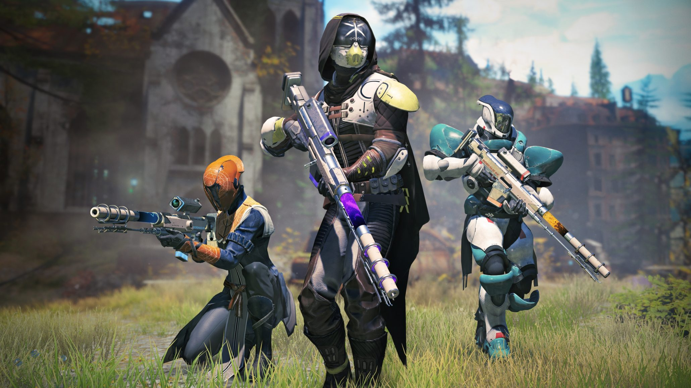

Breeding birds
In my spare time I breed birds in our own backyard. I've been doing this for about 3-4 years now. It started out small with a few birds but now it has grown to over 100 birds.

In the picture above u can see a Kakariki one of many kind of birds i'm breeding with. The reason why I have this kind of bird is because they make very funny noises.

This is a baby Kakariki. I mean who doesn't get happy when u see such a qute bird.
Gaming
I like to game alot when i have the time to do so. But what i enjoy even more is when u can do it with friends and just have a good time.

One of my favorite games is Destiny2. I like it because it has a huge open game world to explore. But the thing i like the most about Destiny2 are the graphics it's are just amazing.
Another great thing about Destiny2 is the fact that u can play with your friends and for example organise a danceoff which is very funny to do once in a while.